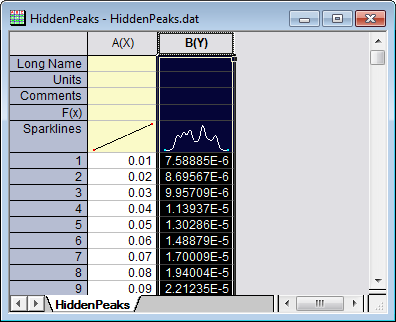
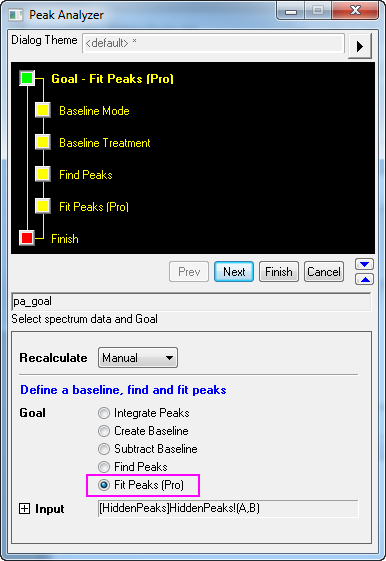
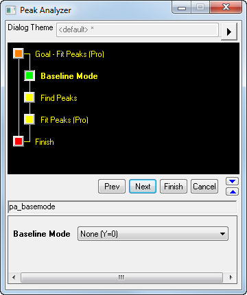
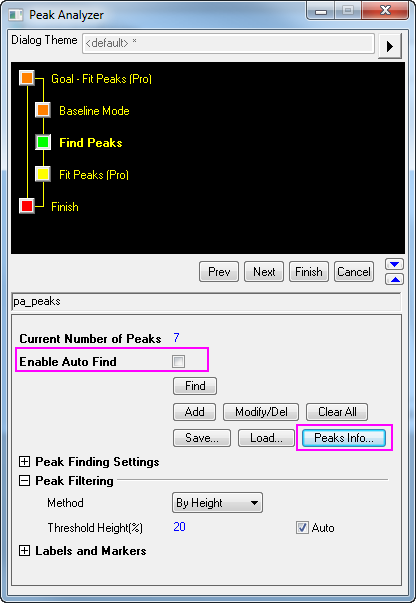
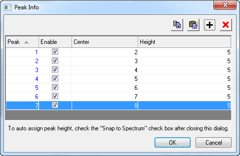
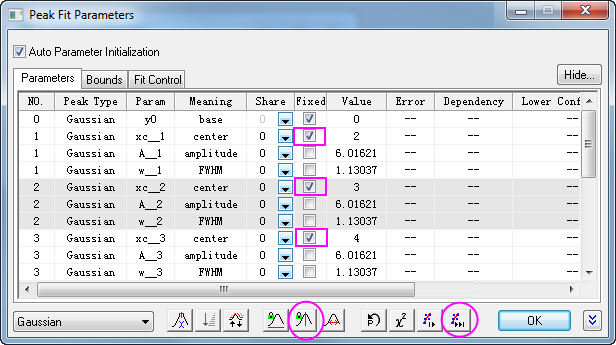
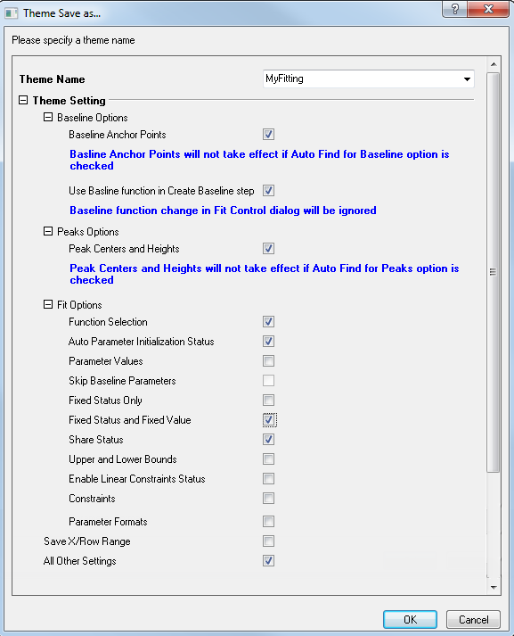
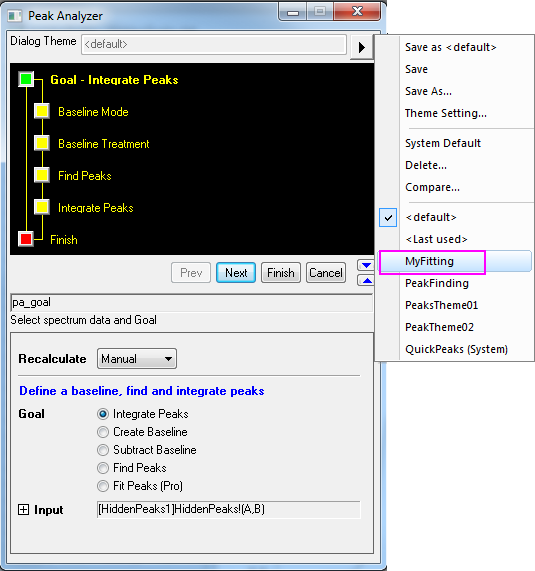

Peakanpassung mit vordefinierten Peakparametern
PeakFit-Preset-PeakParameter
Zusammenfassung
In einigen Fällen möchten Sie vielleicht eine Peakanpassung mit voreingestellten Peakparametern durchführen. Möglicherweise haben Sie viele Datensätze mit einer festen Anzahl von Peaks, und die Zentren dieser Peaks weichen zwischen den Datensätzen nicht voneinander ab. Sie sind hauptsächlich an anderen Parametern der Peaks interessiert, z.B. Höhen. Mit Hilfe des Designs des Hilfsmittels Peaks analysieren können Sie Peakanpassungen mit festen Peakparametern einfach ausführen.
Origin-Version mind. erforderlich: 2016 SR0
Was Sie lernen werden
- Einstellungen des Dialogs Peaks analysieren in einem Design speichern und erneut verwenden
- Peakparameter festlegen
Schritte
Ein Design mit Peakpositionen und Peakparametern speichern
- Öffnen Sie ein neues Arbeitsblatt und importieren Sie die Datei aus dem <Origin-Verzeichnis> \Samples\Spectroscopy\HiddenPeaks.dat.
- Markieren Sie die zweite Spalte und wählen Sie im Origin-Menü Analyse: Peaks und Basislinie: Peaks analysieren, um den Dialog Peaks analysieren zu öffnen.

- Wählen Sie auf der ersten Seite die Option Peaks anpassen (Pro) in der Gruppe Ziel. Klicken Sie auf Nächstes, um zur Seite Modus Basislinie zu gelangen.

- Wählen Sie auf der Seite Modus Basislinie in der Auswahlliste Modus Basislinie die Option Kein. Klicken Sie auf die Schaltfläche Nächstes, um zur Seite Peaks suchen zu gelangen.

- Auf der Seite Peaks suchen:
- Deaktivieren Sie das Kontrollkästchen Automatische Suche aktivieren, weil die Peaks manuell gesucht werden sollen. Klicken Sie auf die Schaltfläche Info Peaks, um den Dialog Peak Info zu öffnen.

- Klicken Sie im Dialog Peak Info 7-mal auf die Schaltfläche Hinzufügen, um 7 Peaks hinzuzufügen. Geben Sie die Peakzentren und -höhen wie folgt ein:

Klicken Sie auf OK, um zum Dialog Peaks analysieren zurückzukehren.
- Klicken Sie auf die Schaltfläche Nächstes, um zur Seite Peaks anpassen (Pro) zu gelangen.
- Auf der Seite Peaks anpassen (Pro):
- Klicken Sie auf Fit-Steuerung, um den Dialog Peak-Fit Parameter zu öffnen.
- Klicken Sie im Dialog Peak-Fit Parameter auf die Schaltfläche Festsetzen oder Lösen aller Peakzentren. Klicken Sie auf die Schaltfläche Fit bis konvergiert. Wenn die Anpassung fertig ist, klicken Sie auf OK, um zum Dialog Peaks analysieren zurückzukehren (siehe dieser wichtige Hinweis zu Fit bis konvergiert).

- Klicken Sie auf die Schaltfläche in Form eines nach rechts zeigenden Dreiecks rechts von den Dialogdesigns im oberen Feld. Wählen Sie im Kontextmenü Speichern unter aus. Der Dialog Design speichern unter wird geöffnet.
- Geben Sie im Dialog Design speichern unter den Namen MeineAnpassung unter Designname ein. Deaktivieren und aktivieren Sie die Kontrollkästchen wie im Screenshot unten zu sehen:

Klicken Sie auf OK, um das Design zu speichern. Dies sollte zurück zum Dialog Peaks analysieren bringen.
- Klicken Sie im Dialog Peaks analysieren auf die Schaltfläche Fertig, um die Analyse abzuschließen.
Das Design erneut verwenden
- Öffnen Sie eine neue Arbeitsmappe und importieren Sie die Datei <Origin-Verzeichnis>\Samples\Spectroscopy\HiddenPeaks.dat.
- Markieren Sie die zweite Spalte.
- Wählen Sie dann Analyse: Peaks und Basislinie: Peaks analysieren, um den Dialog Peaks analysieren zu öffnen.
- Klicken Sie auf der ersten Seite des Dialogs Peaks analysieren auf die Schaltfläche (nach rechts zeigendes Dreieck) rechts von Dialogdesign. Wählen Sie aus dem Kontextmenü MeineAnpassung.

- Klicken Sie auf Nächstes, um zu prüfen, ob die Einstellungen in jedem Schritt richtig sind. Beachten Sie, dass Sie auf der Seite Peaks suchen sehen können, dass die Peakzentren und -höhen die gleichen sind wie letztes Mal.
- Wenn Sie die letzte Seite erreichen, klicken Sie auf die Schaltfläche Fit-Steuerung, um den Dialog Peak-Fit Parameter zu öffnen. Stellen Sie sicher, dass alle Peakzentren festgelegt sind und die Werte die gleichen sind wie das letzte Mal. Klicken Sie auf OK, um zum Dialog Peaks analysieren zurückzukehren.
- Klicken Sie auf Fertig, um die Analyse zu beenden. Überprüfen Sie die Ergebnisse, um zu sehen, ob sie mit den letzten Ergebnissen übereinstimmen.